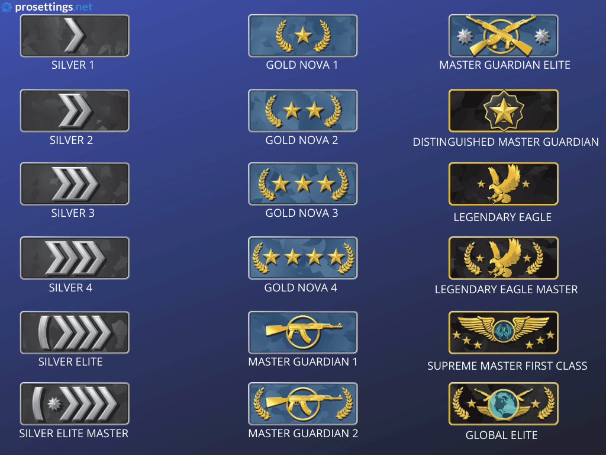

Története
A Counter Strike Global Offensive, rövidített nevén a CSGO egy kompetív jellegű belsőnézetű és csapat alapú internetes lövöldözős játék, ahol a Terror elhárítók (CT-k) és a Terroristák (T-k) csapnak össze. A játék alapja, hogy a Terror elhárítók megakadályozzák és/vagy hatástalanítsák a Terroristákat hogy letegyék, felrobbantsáka bombát. Ezt 2 helyen tudják megtenni a pályán.
Játékmódok
- Verengő (5v5)
- Szárnysegéd (2v2)
- Rombolás
- Könnyed
- Deathmatch
- Fegyververseny
- Repülő felderítő
- Veszélyzóna
- Visszafoglalások
A Versengő kompetitív jellegű és rangbesorolás útján történő játékmenet. Ebben a játékmódban 10 ember csap össze egymás ellen 5 fős csapatokban (T-CT).
A Szárnysegéd kompetitív jellegű és szintén ranbesorolás útján történő játékmenet. Ebben a játékmódban 4 ember méri össze a tudását 2 fős csapatokban lekicsinyített Versengő pályákon.
A rombolás nem kompetitív jellegű. 2 csapat van és egymás semlegesítésével szerezhetnek új fegyvert minden kör elején.
A Könnyed kompetitív jellegű de nem kell hozzá rangbesorolás, leegyszerűsített Versengő nagyobb létszámú csapatokkal.
A Deathmatch egy olyan játékmód ahol mindenki mindenki ellen játszik. Aki a legtöbbet öl, a legtöbb pontot szerzi az ölésekből az nyer.
A Fegyververseny egy 2 csapaton alapuló Deathmatch ahol minden egyes ölés után másik fegyvert kapunk, a legvégső fegyver az aranykés és ha valaki azzal öl egyet akkor megnyeri a meccset.
A Repölő felderítő 2 csapaton alapul és midenkinek SSG08-al van felszerelve, a két csapat egymás ellen játszik aki a több kört nyeri, az lesz a győztes.
A Veszélyzóna egy rangbesorolás útján történő Battle royal. Az nyeri meg aki a legtovább marad életben.
A Visszafoglalás a legújabb játékmód jelenleg, Az élesített bombát kell megvédeniük a T-k nek és a Ct-k nek pedig hatástalanítaniuk kell azt.
Rangok
A játékban különféle rangok, ügyességi csoportok vannak.
